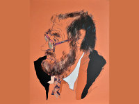
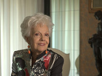
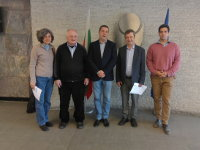
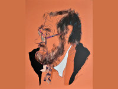
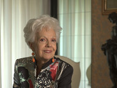
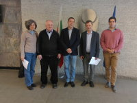

Improvisation in all styles at New Bulgarian University
New Bulgarian University organizes XX Jubilee Edition of the Master Class of Milcho Leviev and Vicky Almazidou, it will take place from 17th to 29th June 2018
 





Vicky Almazidou has participated in tours with world-famous musicians such as Peter Erskine, Glen Ferris, Airto Moreira and in concerts with many world stars as Billy Cobham, Aaron Goldberg, David Murray. She has created the first class of jazz singing at Contemporary Conservatory in Thessaloniki. Along with her pedagogical work, Vicky Almazidou participated in a number of festivals and sang in the most prestigious jazz clubs in Greece and Bulgaria.
This year a special guest lecturer in the Master class will be the famous trombonist Velislav Stoyanov. He is grandson of the great Bulgarian composer Yosif Tsankov and one of the most popular musicians for concerts and studio recordings.
In addition to work with the best Bulgarian musicians, the trombonist had joint projects with persons from the world music stage such as Dephazz, Mezzoforte, Dave Weckl, Jimmy Bosch, Herman Olivera, Max Moya, Peter Herbolzheimer, Poogie Bell, Frankie Morales, Charles Mack, Jiggs Wigham. In 2008, Velislav Stoyanov along with trumpeter Mihail Yossifov, creates conceptual unification of brass musicians Brass Association, which in last few years actively works for the promotion and revival of brass music in Bulgaria, and is an example and support for many young Bulgarian brass musicians.
The Master class will finish with a gala concert at Sofia Life Club on 29th June, 2018 at 21:00, with participation of the best students in the master class together with their teachers. During the concert, Milcho Leviev and Vicky Almazidou will give scholarships from their fund NBU for young musicians.
Over the years, a number of world famous musicians have joined the Master class, including Aron Goldberg – piano (USA), Billy Cobham, drums (USA), David Murray - saxophone (USA), Craig Bailey - saxophone (USA), Francisco Mela - percussion (USA), Chico Freeman - saxophone (USA), Aaron Goldberg - piano (USA), Marc Halbheer - drums (Switzerland), prof. Glenn Ferris - Trombone (France), and the famous Bulgarian musicians Petar Slavov - contrabass, Stoyan Yankulov -Stundji - drums.
« Back to all news